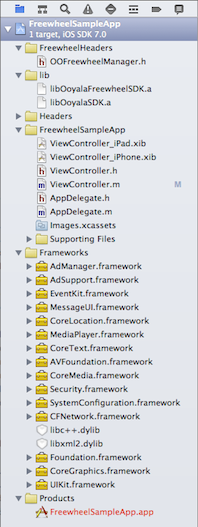

To begin, open the FreeWheelSampleApp/ViewController.m file.
|  |
|
To your Xcode project itself, add Ooyala's the OoyalaFreeWheelSDK-iOS/FreeWheelHeaders folder.
The first three import statements pull in header definitions from the baseline Ooyala Mobile SDK.
The fourth import pulls in the Ooyala FreeWheel Manager definitions.
#import <OoyalaSDK/ViewController.h> #import <OoyalaSDK/OOOoyalaPlayerViewController.h> #import <OoyalaSDK/OOOoyalaPlayer.h> #import <OoyalaSDK/OOFreeWheelManager.h>
@interface ViewController () @property (nonatomic, strong) OOOoyalaPlayerViewController *ooyalaPlayerViewController; @property (nonatomic, strong) OOFreeWheelManager *fwAdManager; @end @implementation ViewController @synthesize ooyalaPlayerViewController;For reference documentation about the OOFreeWheelManager, see the OoyalaFreeWheelSDK-iOS/Documentation subdirectory.
Whereas the sample app defines constants PCODE, EMBEDCODE, and PLAYERDOMAIN (see See the FreeWheel Sample App in Action on iOS), you probably want to define variables, especially for the EMBEDCODE constant (asset ID or content ID).
In the sample app, the view is setup and the fwAdManager object is initialized as an OOFreeWheelManager:
- (void)viewDidLoad {
[super viewDidLoad];
ooyalaPlayerViewController = [[OOOoyalaPlayerViewController alloc] initWithPcode:PCODE domain:[[OOPlayerDomain alloc]
initWithString:PLAYERDOMAIN];
//Setup video view
[ooyalaPlayerViewController.view setFrame:self.videoView.bounds];
[self addChildViewController:ooyalaPlayerViewController];
[self.videoView addSubview:ooyalaPlayerViewController.view];
//Setup FreeWheel
self.fwAdManager = [[OOFreeWheelManager alloc] initWithOoyalaPlayerViewController:ooyalaPlayerViewController];
To set the ad parameters you need, change the values of the parameters included in the app. First, after the ooyalaPlayerView controller has been initialized (in the previous step) but before attempting to play the video, create an NSMutableDictionary named fwParameters; then set the desired parameter values to your own settings (replacing the sample values shown below).
The parameters highlighted below must be set in the app itself; the others can be set as explained in Essential Parameters and FreeWheel OPF Module Ad Set.
//Set FreeWheel parameters. Note that these are optional, and override configurations set in Backlot or in Ooyala internals
NSMutableDictionary *fwParameters = [[NSMutableDictionary alloc] init];
[fwParameters setObject:@"90750" forKey:@"fw_ios_mrm_network_id"];
[fwParameters setObject:@"http://demo.v.fwmrm.net/" forKey:@"fw_ios_ad_server"];
[fwParameters setObject:@"90750:ooyala_ios" forKey:@"fw_ios_player_profile"];
[fwParameters setObject:@"ooyala_test_site_section" forKey:@"fw_ios_site_section_id"];
[fwParameters setObject:@"ooyala_test_video_with_bvi_cuepoints" forKey:@"fw_ios_video_asset_id"];
[fwParameters setObject:@"channel=TEST;subchannel=TEST;section=TEST;mode=online;
player=ooyala;beta=n" forKey:@"FRMSegment"];
[self.fwAdManager overrideFreeWheelParameters:fwParameters];
[ooyalaPlayerViewController.player setEmbedCode:EMBEDCODE]; [ooyalaPlayerViewController.player play];